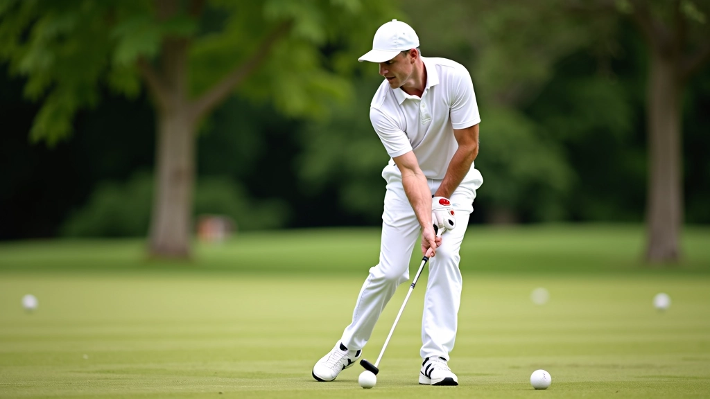

الحركات المتقدمة: من اللاعب الجيد إلى الخبير
بعد إتقان الأساسيات، حان الوقت للحركات الصعبة. تعلم الضربات المنحنية والحسابات المعقدة والتكتيكات النادرة


كتبها
فريق مركز النخبة للكروكيه
فريق التحرير والمراجعة
كتبها فريق مركز النخبة للكروكيه، متخصصون في تقديم إرشادات عملية وسهلة التطبيق لتحسين مهارات الكرة المركزية.
الفرق بين لاعب جيد وخبير ليس في الضربات الأساسية — هذا يتقنها الجميع. الفرق في الحركات النادرة، الحسابات المعقدة، وقراءة الملعب بدقة. نحن هنا لنعلمك كيفية الانتقال إلى المستوى التالي.
في هذا الدليل، ستتعلم التقنيات التي يستخدمها أفضل اللاعبين. لا توجد اختصارات — لكن يوجد طريقة صحيحة للتدريب. والالتزام يأتي مع النتائج.
ما ستتعلمه هنا
- الضربات المنحنية والدورانية المتقدمة
- حسابات الزوايا والمسافات بدقة
- قراءة تحركات الخصم والتنبؤ بها
- استراتيجيات اللعبة في المراحل الحاسمة
- التحكم النفسي تحت الضغط
الضربات المنحنية: أساس اللعب المتقدم
الضربة المنحنية ليست مجرد حركة عرض — إنها أداة استراتيجية أساسية. عندما تتقن الضربة الأساسية، يمكنك الانتقال إلى الضربات التي تنحني حول العوائق.
المفتاح هو فهم كيفية تأثير زاوية المضرب ونقطة الاتصال على مسار الكرة. نحتاج إلى حوالي 4-6 أسابيع من التدريب المنتظم — جلسات من 90 دقيقة، ثلاث مرات في الأسبوع — لإتقان هذه الحركة بشكل حقيقي.
تبدأ بضربات صغيرة منحنية على مسافة قريبة. بعدها تزيد الزاوية والمسافة تدريجياً. والصبر هنا مهم جداً — المستعجلون يفشلون.

ملاحظة تعليمية
هذا الدليل مخصص للتعليم والمعرفة حول تكنيكات الكروكيه. كل لاعب مختلف — ما ينجح مع شخص قد لا ينجح مع آخر. الممارسة والتجربة الشخصية هي أفضل معلم. تذكر أن تستمتع باللعبة في كل خطوة.
قراءة الملعب والحسابات الدقيقة
الخبراء لا يلعبون بالحدس. إنهم يقرأون الملعب مثل الخريطة. كل متر مربع له معنى — المسافة بين الأهداف، منحدرات الأرض، حتى اتجاه الريح.
يجب أن تتعلم حساب الزوايا بسرعة. ليس هناك وقت للجلوس والتفكير لمدة دقيقة. الحسابات تحدث في ثوانٍ. وهذا يأتي مع التكرار — بعد مئات الجولات، تصبح هذه الحسابات طبيعية.
هناك أداة بسيطة: قس المسافة برمية عصا صغيرة من نقطة البداية. تدرب على تقدير المسافات بدقة 10 سنتيمترات. هذا يحسن عينك بشكل كبير.
الاستراتيجية والتنبؤ بحركات الخصم
الفرق بين لاعب جيد وخبير هو القدرة على التنبؤ. الخبير يعرف ما سيفعله الخصم قبل أن يفعله. هذا لا يأتي من السحر — إنه يأتي من دراسة أنماط اللعب.
لاحظ كيف يتحرك خصمك. هل يفضل الضربات المستقيمة أم المنحنية؟ هل يركز على الدفاع أم الهجوم؟ بعد 5-10 جولات، ستبدأ ترى النمط. وعندما تراه، تستطيع الاستعداد له.
الاستراتيجية الحقيقية تعني أحياناً عدم تنفيذ الضربة الأفضل — بل تنفيذ الضربة التي تضع خصمك في موقف صعب. هذا هو اللعب الذكي.
خطوات التدريب العملي
لا تتعلم هذه المهارات من خلال القراءة وحدها. تحتاج إلى تطبيق عملي منتظم. إليك الطريقة الفعالة:
ابدأ بالضربات القصيرة
قبل محاولة ضربات طويلة منحنية، أتقن الحركات القصيرة على مسافة 2-3 أمتار. كرر نفس الحركة 20 مرة يومياً لمدة أسبوعين.
زيادة المسافة والزاوية
عندما تصبح مرتاحاً مع المسافات القصيرة، زد المسافة تدريجياً. أضف زوايا أصعب كل أسبوع. لا تتعجل — هذا يستغرق وقتاً.
تطبيق في ألعاب حقيقية
بعد 3-4 أسابيع من التدريب، ابدأ باستخدام الحركات في ألعاب حقيقية. ستفشل أحياناً — هذا طبيعي. التعلم يأتي من الأخطاء.
المراجعة والتحسين المستمر
حتى الخبراء يمارسون الأساسيات. خصص 15 دقيقة من كل جلسة تدريب لمراجعة الضربات الأساسية. هذا يحافظ على مستواك.
التحكم النفسي تحت الضغط
يلعب الضغط النفسي دوراً كبيراً في اللعب المتقدم. في لحظات حاسمة، قد تفقد تركيزك. الخبراء يعرفون كيفية البقاء هادئين.
هناك تقنية بسيطة: خذ نفساً عميقاً قبل كل ضربة. ركز على التنفس، ليس على النتيجة. عندما تركز على العملية بدلاً من النتيجة، تحسّن أدائك تلقائياً.
مارس هذا في التدريب أيضاً. عندما تقترب من نهاية جلسة التدريب، أضف ضغطاً عقلياً — اجعل آخر 10 ضربات حاسمة. هذا يدربك على التحكم النفسي الحقيقي.
الخلاصة: الطريق إلى الخبرة
الانتقال من لاعب جيد إلى خبير ليس سريعاً. يستغرق شهوراً من التدريب المنتظم والتطبيق الذكي. لكن الرحلة تستحق العناء.
تذكر: الخبراء لا يولدون — يتم تطويرهم. كل حركة متقدمة تراها في الملعب، تدرب شخص عليها مئات المرات قبل أن يتقنها. أنت تستطيع أن تفعل الشيء ذاته.
ابدأ اليوم. ادرس الأساسيات. مارس بانتظام. اقرأ الملعب بذكاء. تحكم بأعصابك. والنتائج ستأتي.
مقالات ذات صلة
اكتشف المزيد من أدلة تحسين مهارات الكروكيه

إتقان الضربة الأساسية: من البداية إلى الاحترافية
تعلم كيفية تنفيذ الضربة الأساسية بشكل صحيح. نغطي موضع القدمين، قبضة المضرب، والحركات الأساسية.
اقرأ المزيد
تكتيكات الكرة المركزية: السيطرة على اللعبة
اكتشف كيفية استخدام الكرة المركزية للسيطرة على اللعب. نشرح الحركات الاستراتيجية والمواقع الفعالة.
اقرأ المزيد
تمارين يومية تحسّن دقتك وقوتك
أفضل اللاعبين يتدربون بانتظام. إليك خمس تمارين عملية يمكنك فعلها في أي ملعب لتحسين مهاراتك.
اقرأ المزيد